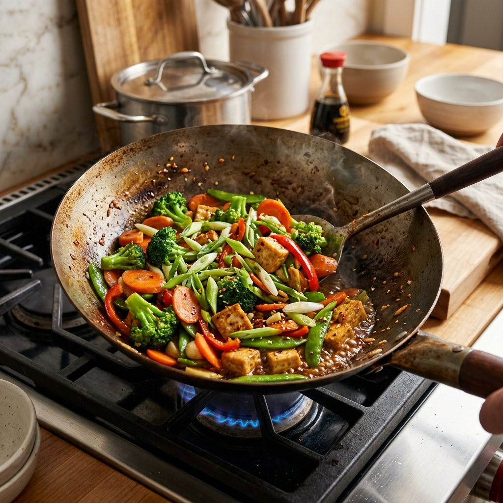
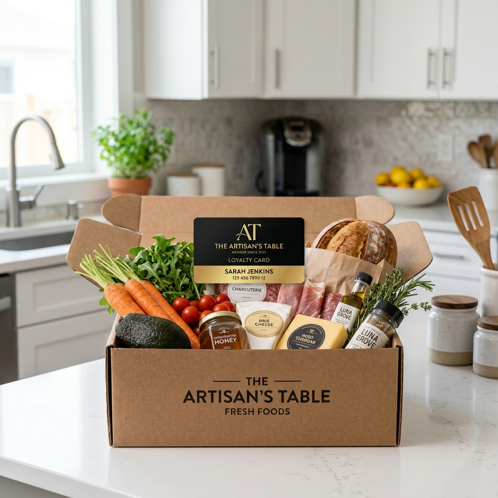

This Season
Seasonal Collections
Hand-picked selections that change with what's actually in season.
Hand-picked selections that change with what's actually in season.
Select your lifestyle path and cook premium meals in minutes.
A vibrant medley of crisp local organic broccoli, sweet carrots, and sugar snap peas tossed in our artisanal garlic-ginger sesame glaze. Perfect for a clean plant-based dinner.

How we bring premium, farm-fresh quality directly to your table.
Choose from our organic recipe bundles, customize your produce variety, or add weekly household essentials.
Our highly trained in-store personal shoppers select the peak-ripeness produce and highest quality dairy/bakery items.
Delivered directly to your door in quiet, carbon-neutral electric vans in a flexible, pre-selected delivery window.
We source directly from local growers who prioritize biodiversity and soil health.
Located in Cedar Creek, just 30 miles from our downtown market, GreenValley has been our primary organic crop partner since 2014. By committing to non-GMO seeds, zero synthetic pesticides, and regenerative farming practices, they provide the absolute freshest organic leafy greens, heirloom tomatoes, and crisp root vegetables to our customers' tables.
Culinary inspiration and health guides curated by our nutrition experts.
Subscribe to our organic boxes and save an extra 10% on every order.
A weekly selection of 6 organic vegetables, perfect for couples.
A large mix of 10 organic seasonal fruits and veggies for families.
Avocados, organic spinach, celery, bananas, apples, and plant milk.
Estimate your weekly grocery spending to see how much you save with our free program.
*Calculated based on 2x points for members and standard 5% reward redemption rates on local artisan brands.
Join Free & Earn RewardsWe believe nourishing people shouldn't cost the planet. Here is how we are reducing our footprint.
We have eliminated single-use plastic boxes from our operations. 90% of our private label brands use biodegradable, recyclable, or compostable wraps.
Zero emissions, silent delivery. Over 40% of our city courier runs are executed using fully electric vans, reducing delivery carbon footprint by 35%.
None of our near-expiration fresh produce goes to landfill. We partner daily with local soup kitchens and regional food banks to feed families in need.
Join our free loyalty program and start earning on every order.
